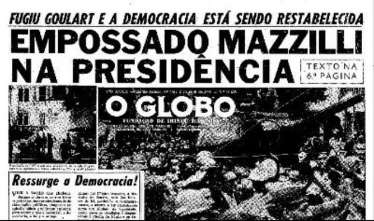
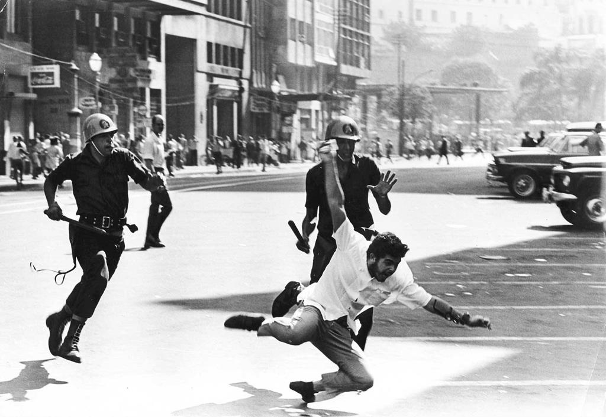
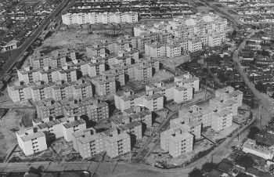
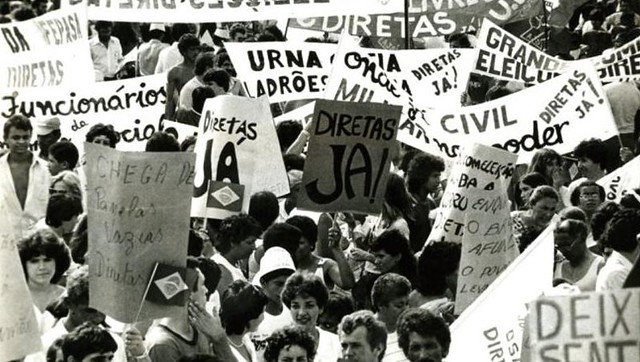
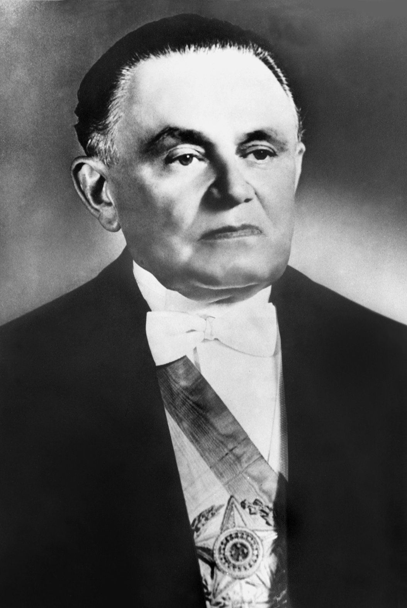
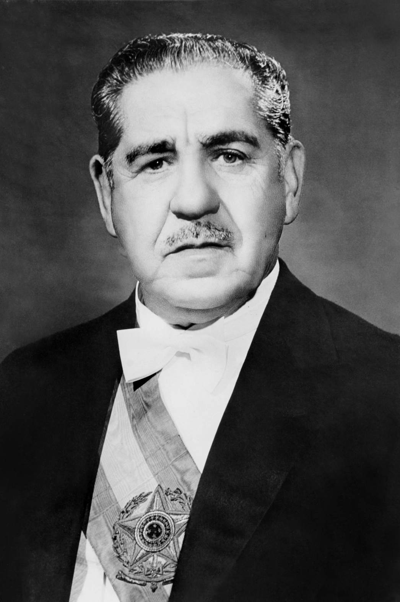
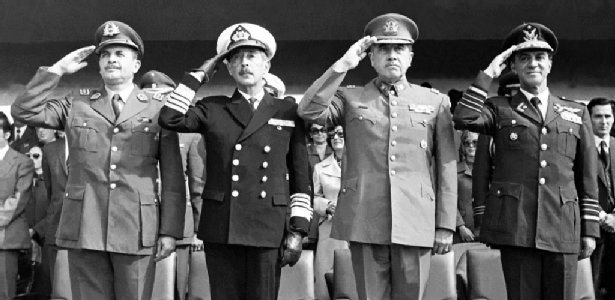
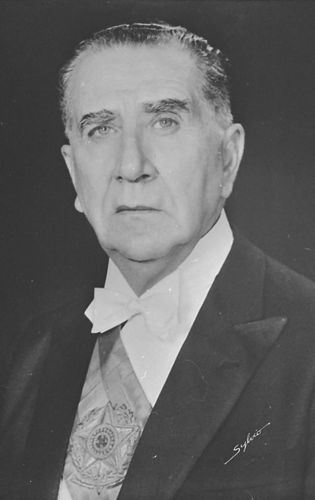
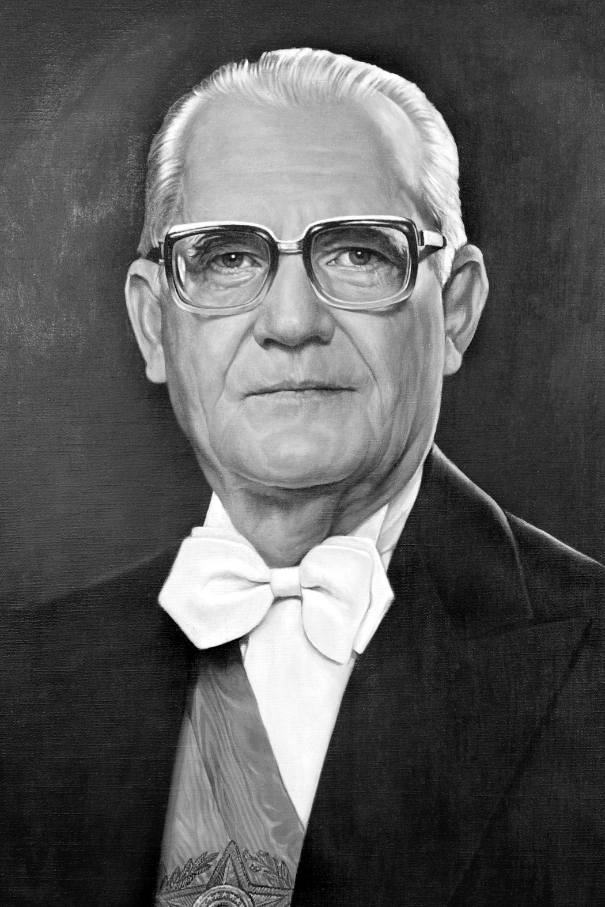
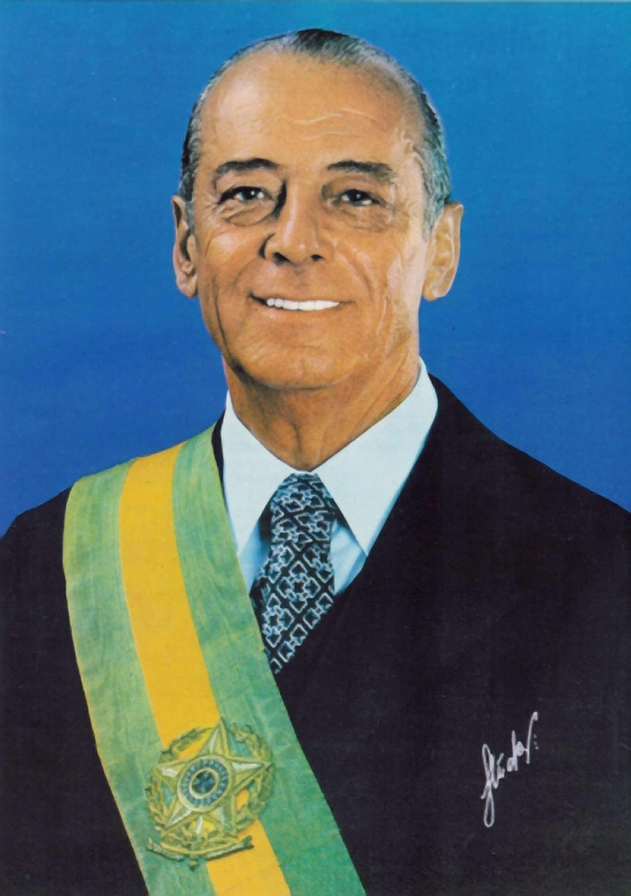

O Regime militar foi o período da política brasileira em que militares conduziram o país.
Essa época ficou marcada na história do Brasil através da prática de vários Atos Institucionais que colocavam em prática a censura, a perseguição política, a supressão de direitos constitucionais, a falta total de democracia e a repressão àqueles que eram contrários ao regime militar.
A Ditadura militar no Brasil teve seu início com o golpe militar de 31 de março de 1964, resultando no afastamento do Presidente da República, João Goulart, e tomando o poder o Marechal Castelo Branco. Este golpe de estado, caracterizado por personagens afinados como uma revolução instituiu no país uma ditadura militar, que durou até a eleição de Tancredo Neves em 1985. Os militares na época justificaram o golpe, sob a alegação de que havia uma ameaça comunista no país.
O golpe militar de 31 de março de 1964 tinha como objetivo evitar o avanço das organizações populares do Governo de João Goulart, acusado de comunista.
O ponto de partida foi a renúncia do presidente Jânio Quadros, em 25 de agosto de 1961. O Congresso Nacional empossou temporariamente o presidente da Câmara, o deputado Ranieri Mazzili, pois o vice-presidente encontrava-se em viagem à China.

Primeira página do jornal O Globo de 2 de abril de 1964
Enquanto João Goulart iniciava sua viagem de volta, os ministros militares expediram um veto à posse de Jango, pois sustentavam que ele defendia ideias de esquerda.
O impedimento violava a Constituição, e não foi aceito por vários seguimentos da nação, que passou a se mobilizar. Manifestações e greves se espalharam pelo país.
Diante da ameaça de guerra civil, foi feita no Congresso a proposta de Emenda Constitucional nº4, estabelecendo o regime parlamentarista no Brasil.
Dessa forma, Goulart seria presidente, mas com poderes limitados. Jango aceitou a redução de seus poderes, esperando recuperá-lo em momento oportuno.
O Congresso votou a favor da medida e Goulart tomou posse no dia 7 de setembro de 1961. Para ocupar o cargo de primeiro-ministro foi indicado o deputado Tancredo Neves.
O parlamentarismo durou até janeiro de 1963, quando um plebiscito pôs fim ao curto período parlamentarista republicano.
Em 1964, Jango resolve lançar reformas de base a fim de mudar o país. Assim, o presidente anunciou:
• Desapropriações de terras;
• nacionalização das refinarias de petróleo;
• reforma eleitoral garantindo o voto para analfabetos;
• reforma universitária, entre outras.
A inflação chegou a atingir em 1963, o índice de 73,5%. O presidente exigia uma nova constituição que acabasse com as "estruturas arcaicas" da sociedade brasileira.
Os universitários atuavam por meio de suas organizações e uma das principais era a União Nacional dos Estudantes (UNE).
Os comunistas de várias tendências, desenvolviam intenso trabalho de organização e mobilização popular, apesar de atuarem na ilegalidade. Diante do quadro de crescente agitação, os adversários do governo aceleraram a realização do golpe.
No dia 31 de março de 1964, o presidente foi deposto, e as forças que tentaram resistir ao golpe sofreram dura repressão. Jango refugiou-se no Uruguai e uma junta militar assumiu o controle do país.
No dia 9 de abril foi decretado o Ato Institucional nº 1, dando poderes ao Congresso para eleger o novo presidente. O escolhido foi o general Humberto de Alencar Castelo Branco, que havia sido chefe do estado-maior do Exército.
Era apenas o início da interferência militar na gestão política da sociedade brasileira.
Depois do golpe de 1964, o modelo político visava fortalecer o poder executivo. Dezessete atos institucionais e cerca de mil leis excepcionais foram impostas à sociedade brasileira.
Com o Ato Institucional nº 2, os antigos partidos políticos foram fechados e foi adotado o bipartidarismo.Desta forma surgiram:
• a Aliança Renovadora Nacional (Arena), que apoiava o governo;
• o Movimento Democrático Brasileiro (MDB), representando os opositores, mas cercado por estreitos limites de atuação.
O governo montou um forte sistema de controle que dificultava a resistência ao regime, através da criação do Serviço Nacional de Informação (SNI). Este era chefiado pelo general Golbery do Couto e Silva.
Os atos institucionais foram promulgados durante os governos dos generais Castello Branco (1964-1967) e Artur da Costa e Silva (1967-1969). Na prática, acabaram com o Estado de direito e as instituições democráticas do país.
Em termos econômicos, os militares trataram de recuperar a credibilidade do país junto ao capital estrangeiro. Assim foram tomadas as seguintes medidas:
• contenção dos salários e dos direitos trabalhistas;
• aumento das tarifas dos serviços públicos;
• restrição ao crédito;
• corte das despesa do governo;
• diminuição da inflação, que estava em torno de 90% ao ano.
Entre os militares, porém, havia discordância. O grupo mais radical, conhecido como "linha dura", pressionava o grupo de Castelo Branco, para que não admitisse atitudes de insatisfação e afastasse os civis do núcleo de decisões políticas.
As divergências internas entre os militares influenciaram na escolha do novo general presidente.
No dia 15 de março de 1967, assumiu o poder o general Artur da Costa e Silva, ligado aos radicais. A nova Constituição de 1967 já havia sido aprovada pelo Congresso Nacional.
Apesar de toda repressão, o novo presidente enfrentou dificuldades. Formou-se a Frente Ampla para fazer oposição ao governo, tendo como líderes o jornalista Carlos Lacerda e o ex-presidente Juscelino Kubitschek.
A sociedade reagia às arbitrariedades do governo. Em 1965 foi encenada a peça "Liberdade, Liberdade", de Millôr Fernandes e Flavio Rangel, que criticava o governo militar.
Os festivais de música brasileira foram cenários importantes para atuação dos compositores, que compunham canções de protesto.
A Igreja Católica estava dividida: os grupos mais tradicionais apoiavam o governo, porém os mais progressistas criticavam a doutrina da segurança nacional.
As greves operárias reivindicavam o fim do arrocho salarial e queriam liberdade para estruturar seus sindicatos. Os estudantes realizavam passeatas reclamando da falta de liberdade política.
Com o aumento da repressão e a dificuldade de mobilizar a população, alguns líderes de esquerda organizaram grupos armados para lutar contra a ditadura.
Entre as diversas organizações de esquerda estavam a Aliança de Libertação Nacional (ALN) e o Movimento Revolucionário 8 de outubro (MR-8).
O forte clima de tensão foi agravado com o discurso do deputado Márcio Moreira Alves, que pediu ao povo que não comparecesse às comemorações do dia 7 de setembro.
Para conter as manifestações de oposição, o general Costa e Silva decretou em dezembro de 1968, o Ato Institucional nº 5. Este suspendia as atividades do Congresso e autorizava à perseguição de opositores.
Em agosto de 1969, o presidente Costa e Silva sofreu um derrame cerebral e assumiu o vice-presidente Pedro Aleixo, político civil mineiro.
Em outubro de 1969, 240 oficiais generais indicam para presidente o general Emílio Garrastazu Médici (1969-1974), ex-chefe do SNI. Em janeiro de 1970, um decreto-lei tornou mais rígida a censura prévia à imprensa.
Na luta contra os grupos de esquerda, o exército criou o Departamento de Operações Internas (DOI) e o Centro de Operações da Defesa Interna (CODI).
A atividade dos órgãos repressivos desarticularam as organizações de guerrilhas urbana e rural, que levaram à morte dezenas de militantes de esquerda.

Com um forte esquema repressivo montado, Médici governou procurando passar a imagem de que o país encontrara o caminho do desenvolvimento econômico. Somado à conquista da Copa de 70, isso acabou criando um clima de euforia no país.
A perda das liberdades políticas era compensada pela modernização crescente. O petróleo, o trigo e os fertilizantes, que o Brasil importava em grandes quantidades, estavam baratos, eram incorporados à pauta das exportação, soja, minérios e frutas.
O setor que mais cresceu foi o de bens duráveis, eletrodomésticos, carros, caminhões e ônibus. A indústria da construção cresceu.
Mais de 1 milhão de novas moradias, financiadas pelo Banco Nacional de Habitação (BNH), foram construídas em dez anos de governo militar. Falava-se em "milagre brasileiro" ou "milagre econômico".

Vista aérea do conjunto habitacional general Dale Coutinho construído através do financiamento do BNH, em Santos, em 1979.
Em 1973, o "milagre" sofreu sua primeira dificuldade, pois a crise internacional elevou abruptamente o preço do petróleo, encarecendo as exportações.
O aumento do juros no sistema financeiro internacional, elevou o juros da dívida externa brasileira. Isto obrigou o governo a tomar novos empréstimos aumentando ainda mais a dívida.
No dia 15 de março de 1974, Médici foi substituído na Presidência pelo general Ernesto Geisel (1974-1979). Ele assumiu prometendo retomar o crescimento econômico e restabelecer a democracia.
Mesmo lenta e controlada a abertura política começava, o que permitiu o crescimento das oposições.
O governo Geisel aumentou a participação do Estado na economia. Vários projetos de infraestrutura tiveram continuidade, entre elas, a Ferrovia do Aço, em Minas Gerais, a construção da hidrelétrica de Tucuruí, no Rio Tocantins e o Projeto Carajás.
Diversificou as relações diplomáticas comerciais e diplomáticas do Brasil, procurando atrair novos investimentos.
Nas eleições de 1974, a oposição aglutinada no MDB, obteve ampla vitória. Ao mesmo tempo, Geisel procurava conter este o avanço. Em 1976, limitou a propaganda eleitoral.
No ano seguinte, diante da recusa do MDB em aprovar a reforma da Constituição, o Congresso foi fechado e o mandato do presidente foi aumentado para seis anos.
A oposição começou a pressionar o governo, junto com a sociedade civil. Com a crescente pressão, o Congresso já reaberto aprovou, em 1979, a revogação do AI-5. O Congresso não podia mais ser fechado, nem ser cassados os direitos políticos dos cidadãos.
Geisel escolheu como seu sucessor o general João Batista Figueiredo, eleito de forma indireta. Figueiredo assumiu o cargo em 15 março de 1979, com o compromisso de aprofundar o processo de abertura política.
No entanto, a crise econômica seguia adiante, e a dívida externa atingia mais de 100 bilhões de dólares, e a inflação, chegava a 200% ao ano.
As reformas políticas continuaram sendo realizadas, mas a linha dura continuava com o terrorismo. Surgiram vários partidos, entre eles o Partido Democrático Social (PDS) e o Partido dos Trabalhadores (PT). Foi fundada a Central Única dos Trabalhadores (CUT).
Os espaços de luta pelo fim da presença dos militares no poder central foram se multiplicando.
Diretas já
Nos últimos meses de 1983, teve início em todo o país uma campanha pelas eleições diretas para presidente, as "Diretas Já", que uniram várias lideranças políticas como Fernando Henrique Cardoso, Lula, Ulysses Guimarães, entre outros.
O movimento que chegou ao auge em 1984, quando seria votada a Emenda Dante de Oliveira, que pretendia restabelecer as eleições diretas para presidente.
No dia 25 de abril, a emenda apesar de obter a maioria dos votos, não conseguiu os 2/3 necessários para sua aprovação.
Logo depois da derrota de 25 de abril, grande parte das forças de oposição resolveu participar das eleições indiretas para presidente. O PMDB lançou Tancredo Neves, para presidente e José Sarney, para vice-presidente.
Reunido o Colégio Eleitoral, a maioria dos votos foi para Tancredo Neves, que derrotou Paulo Maluf, candidato do PDS. Desse modo encerrava-se os dias da ditadura militar.

Protesto em prol da diretas já.
Governo Castello Branco (1964-1967)
Castello Branco, general militar, foi eleito pelo Congresso Nacional presidente da República em 15 de abril de 1964. Em seu pronunciamento, declarou defender a democracia, porém ao começar seu governo, assume uma posição autoritária.
Estabeleceu eleições indiretas para presidente, além de dissolver os partidos políticos. Vários parlamentares federais e estaduais tiveram seus mandatos cassados, cidadãos tiveram seus direitos políticos e constitucionais cancelados e os sindicatos receberam intervenção do governo militar.
Em seu governo, foi instituído o bipartidarismo. Só estavam autorizados o funcionamento de dois partidos: Movimento Democrático Brasileiro ( MDB ) e a Aliança Renovadora Nacional ( ARENA ). Enquanto o primeiro era de oposição, de certa forma controlada, o segundo representava os militares.
O governo militar impõe, em janeiro de 1967, uma nova Constituição para o país. Aprovada neste mesmo ano, a Constituição de 1967 confirma e institucionaliza o regime militar e suas formas de atuação.

Governo Costa e Silva (1967-1969)
Em 1967, assume a presidência o general Arthur da Costa e Silva, após ser eleito indiretamente pelo Congresso Nacional. Seu governo é marcado por protestos e manifestações sociais. A oposição ao regime militar cresce no país. A UNE ( União Nacional dos Estudantes ) organiza, no Rio de Janeiro, a Passeata dos Cem Mil.
Em Contagem (MG) e Osasco (SP), greves de operários paralisam fábricas em protesto ao regime militar.
A guerrilha urbana começa a se organizar. Formada por jovens idealistas de esquerda, assaltam bancos e sequestram embaixadores para obterem fundos para o movimento de oposição armada.
No dia 13 de dezembro de 1968, o governo decreta o Ato Institucional Número 5 ( AI-5 ). Este foi o mais duro do governo militar, pois aposentou juízes, cassou mandatos, acabou com as garantias do habeas-corpus e aumentou a repressão militar e policial.

Governo da Junta Militar (31/8/1969 - 30/10/1969)
Doente, Costa e Silva foi substituído por uma junta militar formada pelos ministros Aurélio de Lira Tavares (Exército), Augusto Rademaker (Marinha) e Márcio de Sousa e Melo (Aeronáutica).
Dois grupos de esquerda, O MR-8 e a ALN sequestram o embaixador dos EUA Charles Elbrick. Os guerrilheiros exigem a libertação de 15 presos políticos, exigência conseguida com sucesso. Porém, em 18 de setembro, o governo decreta a Lei de Segurança Nacional. Esta lei decretava o exílio e a pena de morte em casos de "guerra psicológica adversa, ou revolucionária, ou subversiva".
No final de 1969, o líder da ALN, Carlos Mariguella, foi morto pelas forças de repressão em São Paulo.

Governo Medici (1969-1974)
Em 1969, a Junta Militar escolhe o novo presidente: o general Emílio Garrastazu Medici. Seu governo é considerado o mais duro e repressivo do período, conhecido como " anos de chumbo ". A repressão à luta armada cresce e uma severa política de censura é colocada em execução. Jornais, revistas, livros, peças de teatro, filmes, músicas e outras formas de expressão artística são censuradas. Muitos professores, políticos, músicos, artistas e escritores são investigados, presos, torturados ou exilados do país. O DOI-Codi ( Destacamento de Operações e Informações e ao Centro de Operações de Defesa Interna ) atua como centro de investigação e repressão do governo militar.
Ganha força no campo a guerrilha rural, principalmente no Araguaia. A guerrilha do Araguaia é fortemente reprimida pelas forças militares.

Governo Geisel (1974-1979)
Em 1974 assume a presidência o general Ernesto Geisel que começa um lento processo de transição rumo à democracia. Seu governo coincide com o fim do milagre econômico e com a insatisfação popular em altas taxas. A crise do petróleo e a recessão mundial interferem na economia brasileira, no momento em que os créditos e empréstimos internacionais diminuem.
Geisel anuncia a abertura política lenta, gradual e segura. A oposição política começa a ganhar espaço. Nas eleições de 1974, o MDB conquista 59% dos votos para o Senado, 48% da Câmara dos Deputados e ganha a prefeitura da maioria das grandes cidades.
Os militares de linha dura, não contentes com os caminhos do governo Geisel, começam a promover ataques clandestinos aos membros da esquerda. Em 1975, o jornalista Vladimir Herzog á assassinado nas dependências do DOI-Codi em São Paulo. Em janeiro de 1976, o operário Manuel Fiel Filho aparece morto em situação semelhante.
Em 1978, Geisel acaba com o AI-5, restaura o habeas-corpus e abre caminho para a volta da democracia no Brasil.

Governo Figueiredo (1979-1985)
A vitória do MDB nas eleições em 1978 começa a acelerar o processo de redemocratização. O general João Baptista Figueiredo decreta a Lei da Anistia, concedendo o direito de retorno ao Brasil para os políticos, artistas e demais brasileiros exilados e condenados por crimes políticos. Os militares de linha dura continuam com a repressão clandestina. Cartas-bomba são colocadas em órgãos da imprensa e da OAB (Ordem dos advogados do Brasil). No dia 30 de Abril de 1981, uma bomba explode durante um show no centro de convenções do Rio Centro. O atentado fora provavelmente promovido por militares de linha dura, embora até hoje nada tenha sido provado.
Em 1979, o governo aprova lei que restabelece o pluripartidarismo no país. Os partidos voltam a funcionar dentro da normalidade. A ARENA muda o nome e passa a ser PDS, enquanto o MDB passa a ser PMDB. Outros partidos são criados, como : Partido dos Trabalhadores ( PT ) e o Partido Democrático Trabalhista ( PDT ).
